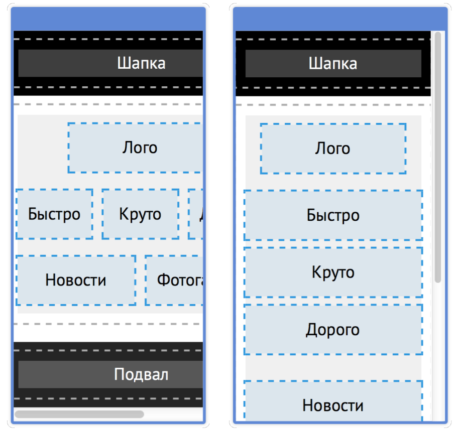
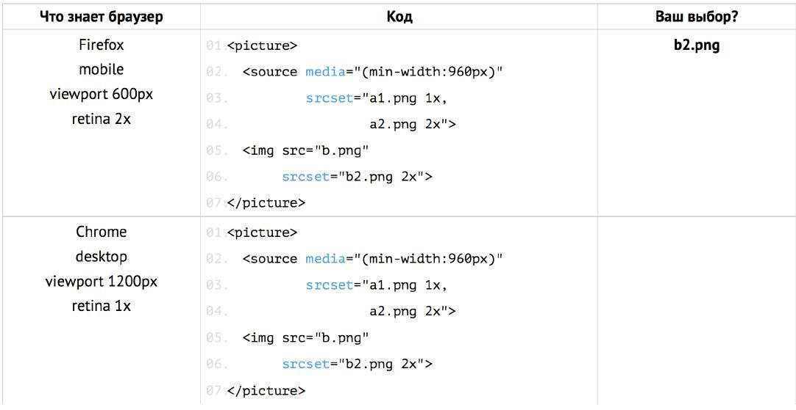

Адаптивная верстка
Софья Лапшина
Адаптивная верстка
или нормально делай, нормально будет
Фиксированная сетка. Маленький экран
Резиновая сетка

Каждому сетку по потребностям!

Медиавыражение
- @media - объявляем медиавыражение
- (...) - условие
- and - логическое "и"
- , - логическое "или"
- not - логическое "не"
@media (...) and (...) {
.container {
width: 500px;
background-color: #ffffff;
}
}
Медиавыражение. Условия.
@media (max-width: 559px)@media (min-width: 560px) and (max-width: 990px)@media (min-width: 991px)@media screen and (min-width: 990px)
Вьюпорт
Видимая область страницы в браузере, окно браузера включая полосу прокрутки. Относительно вьюпорта рассчитываются размеры тега и относительные размеры его потомков.
Два вьюпорта на мобильном

Сеточный вьюпорт
- Его ширина варьируется от 750 до 1200px в зависимости от устройства
- Условия в медиавыражениях (минимальная и максимальная ширина) реагируют на размеры сеточного вьюпорта. Поэтому срабатывают CSS-правила для планшета или десктопа

Визуальный вьюпорт
- Уменьшает и увеличивает картинку страницы отрендеренную на ширине сеточного вьюпорта
- Ведь сеточный вьюпорт всегда больше размера экрана и страница никогда не влезет на экран целиком

Решение проблемы
- Надо сделать сеточный вьюпорт размером с визуальный
- Будут срабатывать правильные медиавыражения
- Страница будет помещаться на визуальный вьюпорт без масштабирования и горизонтального скролла
< meta name="viewport" content="width=device-width,initial-scale=1" >
meta name="viewport" content=
- width = device-width, - ширина сеточного вьюпорта должна быть такой же как ширина устройства
- initial-scale=1 - начальное увеличение - 1 (т.е. никакого)
Экранные пиксели и CSS-пиксели
- 2 разные сущности
- Можно заметить при зуме или на современных устройствах
Экраны с повышенной плотность пикселей
Количество физический пикселей больше, чем у обычного экрана, а сами пиксели меньше
Проблемы с графикой на ретине
Графику для ретина-экранов надо специальным образом подготавливать, чтобы изображения не были "замыленными"
Определение ретина-экрана
@media (min-resolution: 144dpi),
(min-resolution: 1.5dppx) {...}
- DPI - Dots Per Inch (точка на дюйм)
- DPPX - Dots Per Pixel (точка на пиксель)
Содержание для ретинизации
- Текст
- Растровые фоновые изображения
- Растровые константные изобрадния (тег < img >)
- Векторные изображения
Текст
С текстом проблем нет. Старайтесь по-максимуму использовать текст там, где это можно
Растровая графика
- Растрова графика - секта разнцветных пиксеей. Ширина сетки фиксированная
- Форматы - jpg, gif, png и другие
Ретина и фоновые изображения
Ретина и фоновые изображения
Ретина и растовые < img >
- Старайтесь использовать возможности CSS вместо картинок: тени, закругления, градиенты
- Простые изображения можно перевести в вектор
- Не анимированные GIF старайтесь перевести в PNG
- Если необходимо использовать растровое изображение, то используйте прием с увеличенной картинкой
Ретина и растовые < img >
Чтобы отдавать увеличенные картинки только на ретиновые экраны, используем srcset
Оптимизация растровых изображений
- Оптимизируйте изображения с помощью ImageOptim
- Используйте ImageAlpha для дополнительной оптимизации полупрозрачных PNG
Векторная графика
- Векторная графика - изображения, описываемые математическими функциями. Размер не важен. Бесконечно масштабируемы в любом направлении без потери качества
- Векторный формат веба: SVG
Ретина и векторная графика
- SVG масштабируются автоматически и не теряют качество.
- Поддержка SVG: IE9+ и все современные браузер
Сводка по ретинизации
- Текст выглядит отлино сам по себе
- PNG / JPEG — увеличивайте изображения в два раза
- GIF переводите в PNG и увеличивайте в два раза
- Анимированный GIF — увеличивайте в два раза
- Фоновые изображения — используйте background-size
- Лучше отдавайте разные версии растровой графики для ретины и нет
- Оптимизируйте растровую графику
- SVG — выглядит отлично. При необходимости используйте фоллбеки
Как сделать < img > адаптивным?
С помощью новых атрибутов srcset, sizes и тега-обёртки < picture >.
Тег < picture > в сочетании с новыми атрибутами определяет умные настройки, подменяя src у < img >, когда это необходимо. Он даёт возможность разработчику передать браузеру информацию, необходимую для выбора подходящей картинки.
Браузер выбирает картинку
Браузер знает
- Ширина вьюпорта
- Ретиновость экарана
Браузер не знает
- Размер картинки
- Картинка к вьпорту
Назначение srcset
- Дать браузеру возможность выбрать лучший вариант из предложенных
- Рассказать браузеру о фактических размерах предложенных картинок
- Не предназначен для кадрирования
Выбери что загрузить 2

Выбери что загрузить 2

Выбери что загрузить 2

Выбери что загрузить 2. Бонус
Выбери что загрузить 2. Бонус
Выбери что загрузить 2. Бонус
Назначение тега source
- В зависимости от условий задать нужное изображение
- Рассказать браузеру о том, что есть картинки в новых форматах
- Рассказать браузеру о том, какая картинка подходит к вьюпорту
- Можно использовать для кадрирования и сочетается с srcset, в котором можно прописать варианты одной и той же картинки разного качества.
Поддержка < picture > и полифил
- Поддержка: Chrome, Operа, Firefox, Edge
- Полифил: Picturefill